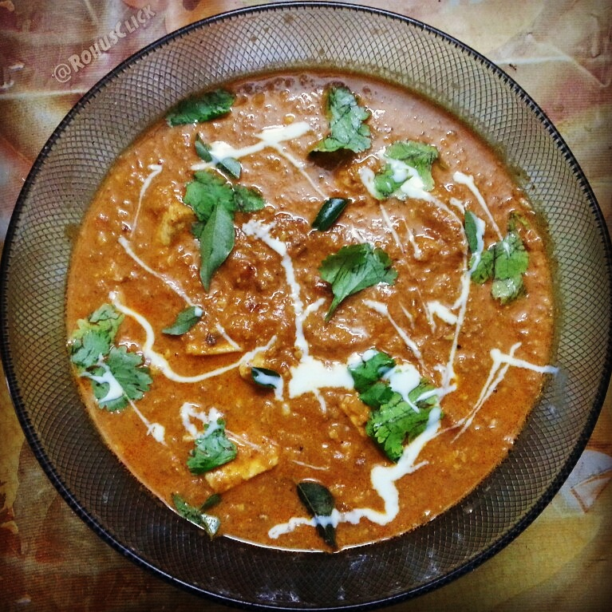

Paneer Butter Masala

Desciption
Paneer Butter Masala is a classic
North Indian dish that brings together creamy textures and bold
flavors in every bite. Soft cubes of paneer are gently
fried to golden perfection before being simmered in a silky, aromatic
tomato-based gravy enriched with
butter, cream, and a blend of warm spices. The combination of
ginger, garlic, red chili, cumin, and garam masala creates a
harmony of spice and sweetness, perfectly balanced by the smoothness of
cashews and cream. Whether served with naan, roti, or a bowl of
steamed rice, this restaurant-style
Paneer Butter Masala captures the essence of indulgent
Indian comfort food.
Ingredients
- ½ cup vegetable oil
- ½ pound paneer, cut into ½-inch cubes
- 2 tablespoons butter
- 2 onions, finely chopped
- 1 teaspoon ginger paste
- 1 teaspoon garlic paste
- 1 tablespoon ground cashews
- 1 teaspoon ground red chiles
- ½ teaspoon ground cumin
- ½ teaspoon ground coriander
- ½ teaspoon garam masala
- 1 (8 ounce) can tomato sauce
- ½ cup half-and-half
- ½ cup milk
- ½ teaspoon white sugar
- ½ teaspoon salt
Steps
-
Heat ½ cup of vegetable oil in a pan over medium heat. Add the paneer
cubes and fry until they turn light golden on all sides. Remove them
from the oil and place on paper towels to drain any excess oil. Set
aside.
-
In the same pan, melt 2 tablespoons of butter. Add the finely chopped
onions and sauté until they turn golden brown. Stir in the ginger paste
and garlic paste, and cook for another minute until fragrant.
-
Mix in the ground cashews, red chili powder, cumin, coriander, and garam
masala. Stir well and cook for about 1–2 minutes to release the flavors.
-
Pour in the tomato sauce and cook for 5–7 minutes, stirring
occasionally, until the sauce thickens slightly and the oil begins to
separate from the sides.
-
Reduce the heat to low. Add the half-and-half and milk, stirring
continuously to create a smooth, creamy gravy. Mix in the sugar and
salt, and simmer gently for another 3–4 minutes.
-
Gently add the fried paneer cubes to the sauce. Stir well so that all
pieces are coated evenly in the rich gravy. Simmer for 5 minutes on low
heat, allowing the paneer to absorb the flavors.
-
Turn off the heat and let it rest for a few minutes. Garnish with a
swirl of cream or a small pat of butter and a sprinkle of fresh
coriander leaves. Serve hot with naan, roti, or basmati rice.
Image credits: "Recipe using Paneer and Butter as the main ingredient" by
Rohith Thulasidas
(CC BY-SA 4.0).
Home